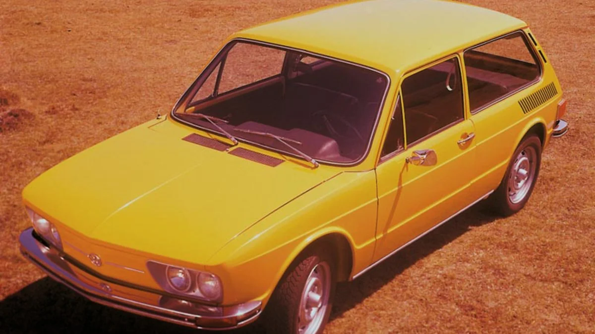
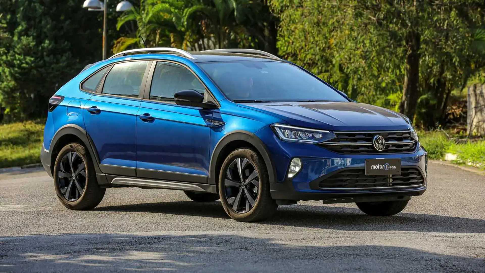

O carro que marcou o século
A Brasilia começou a nascer no outono de 1970, quando Rudolf Leiding, presidente da VW brasileira,
irrompeu
no departamento de estilo da fábrica em direção à mesa de Marcio Piancastrelli

Um pouco sobre essa maravilha
Design
O Brasília foi projetado com uma estética que mistura funcionalidade com charme. Com sua forma de "caixote" e linhas retas, ele ofereceu uma abordagem prática e específica para a época. A ideia era criar um carro que fosse ao mesmo tempo robusto e acessível, ideal para famílias brasileiras em busca de um veículo confiável e com bom espaço
Especicações tecnicas
O Brasília utilizava o motor boxer 1.6, refrigerado a ar, o mesmo que equipava o Fusca. Esse motor era conhecido por sua robustez e facilidade de manutenção, características muito apreciadas pelo público brasileiro. Com tração traseira e um motor montado na parte de trás, o carro tinha uma distribuição de peso peculiar, o que influenciava sua dirigibilidade. A suspensão do Brasília foi projetada para enfrentar as estradas muitas vezes precárias do Brasil, proporcionando uma condução confortável mesmo em terrenos irregulares.
Impacto Cultural
O Brasília não foi apenas um carro, mas um símbolo de uma época. Ele representa a ascensão da classe média brasileira, a urbanização e o crescimento do país durante os anos 1970. O carro também marcou presença em filmes, novelas e músicas, tornando-se um ícone cultural. Em diversos aspectos, o Brasília se tornou um símbolo nostálgico da juventude de muitas pessoas.
Musica com seu nome
A musica com nome e com muitos trechos citando o carro
Uma das mais tops do Brasil
- Motor: Equipado com motor boxer 1.600, refrigerado a ar.
- Tração: Tração traseira e motor montado na parte de trás.
- Suspensão Projetada para enfrentar terrenos irregulares com conforto.
- Interior: Espaçoso e funcional, com bancos confortáveis. Com opcional de cores.
- Entusiastas: Diversos clubes organizam encontros e eventos dedicados ao modelo. Sendo muitos com personalizações e diferentes estilos.
Preços dos modelos na época
| 1980 | Equivalente a hoje |
|---|---|
|  |  |
| Em seu lansamento ela custava Cr$20.741 | Oque hoje equivale a R$121.456 ou ao equivalente ao nivus da foto |